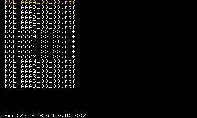
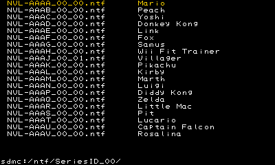
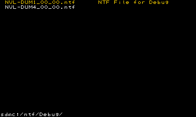
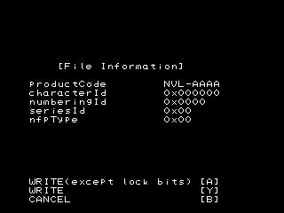
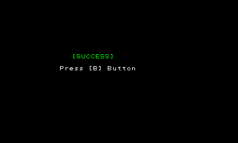
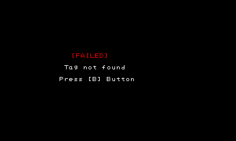

NoftWriter is a tool for creating a Nintendo Original Format Tag (NOFT) from an NTF file to write to a tag.
The NTF and amiibo_DataList.csv files use items included in the amiibo data list package.
Even without the amiibo_DataList.csv file, NoftWriter is not affected.
Write the NTF file included in the amiibo data list package to a location of your choice on an SD card.
Non-ASCII characters cannot be used in the name of the file or the folder.
Start NoftWriter with the SD card that has the NTF file on it inserted into SNAKE. A screen like the one in the following figure appears on SNAKE's upper screen when the application starts.

The folder in the current directory and the NTF file appear above.
The absolute path to the current directory is shown below.
If the amiibo_DataList_yyyymmdd.csv file included in the amiibo data list package is renamed to amiibo_DataList.csv and saved directly in the SD card, US_English names of the characters defined in the NTF file are also displayed.

When using the NTF files for development created with NTFMaker,
character names and file descriptions can be added to amiibo_DataList.csv.
NVL-AAAA_00_00.ntf,Mario : NVL-AACC_00_00.ntf,PAC-MAN NVL-AACB_00_00.ntf,Mega Man NVL-DUM1_00_00.ntf,NTF File for Debug
The NTF filename is posted on the first row, and the display string is posted on the second row.
Ensure that the NTF filename (including extension) and display string is 24 characters or shorter.
Also, non-ASCII characters cannot be used.

Select the NTF file you want to write. Move the focus with the up/down buttons on the +Control Pad, and press the A Button to make selections. Pressing the A Button while a folder has focus navigates to that folder. Pressing the B Button moves up one folder. A screen like the one shown in the figure below appears on the SNAKE's lower screen when an NTF file is selected.

NOFT that are created with WRITE(except lock bits) can use this tool to write other NTF files afterward.
However, the created NOFT cannot be used when the Config tool is run in the development hardware or development tool, and debug mode is enabled.
NOFT that are created with WRITE cannot be used to write other NTF files afterward. These NOFT can be used even when debug mode is enabled.
Also, NOFT that are created with WRITE(except lock bits) can overwrite other NTF files with WRITE, but after that, writing with WRITE(except lock bits) will fail.
| Write Object Tag | Write Method | Writability | Usable Debug Modes |
|---|---|---|---|
| Tags that have not been written | WRITE(except lock bits) | Write Possible | enable Only |
| Tags that have not been written | WRITE | Write possible, but cannot write afterward | enable/disable |
| Tag written with WRITE(except lock bits) | WRITE(except lock bits) | Write Possible | enable Only |
| Tag written with WRITE(except lock bits) | WRITE | Write possible, but cannot write afterward | enable/disable |
| Tag written with WRITE | WRITE(except lock bits) | Write-protected | enable/disable |
| Tag written with WRITE | WRITE | Write-protected | enable/disable |
When writing to the tag concludes normally, "[SUCCESS]" is shown in green letters on SNAKE's upper screen, as shown in the figure below.

When writing to the tag fails, "[FAILED]" and the reason writing failed are shown in red letters on SNAKE's upper screen, as shown in the figure below.

If incorrect data is written to the tag, it could be rendered unusable.
CONFIDENTIAL